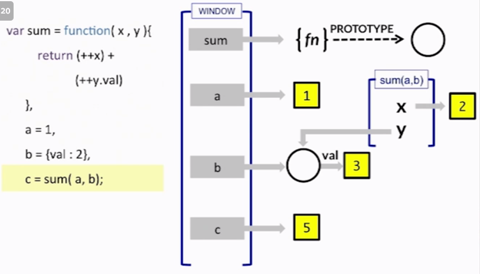
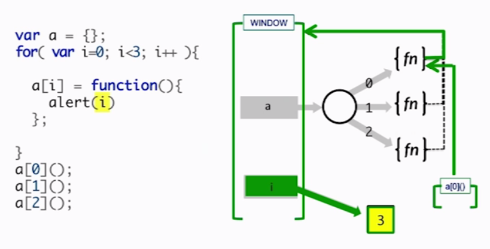

Becoming Javascript Queen
July 21, 2015
How to master JavaScript
After two unsuccessful javascript interviews, I decide to take some time and study in depth. Like it or not, JavaScript developer positions are much more than Ruby developer positions and I just can't ignore powerful libraries and their scalability! So What is JavaScript?
JS is a single threaded lagnauge. JS is a dynamic, weakly typed, prototype-based language with first-class functions. If you think about it, DOM is JavaScript representation of HTML and browser.
First, let's see how JS memory and variable works.
In this example, JS created the variable sum as a function and skip the function body. Next, It will create a, b and assigned to number and an object. When it try to create the variable c, it will invoke the function sum and then reads the function body. a and b becomes x and y and then it will return the result, which is 2 + 3 = 5
Let's pretend there is a new variable d. If you call d = sum(a,b), what happen?
It will still return 5. Because the system will create new variable d apart from c and assigned to sum(a,b) like they don't know nothing about c.
As you can guess, if you call c(); it will returns 7. It is because it will bring c value and then execute again.
Let's observe weired behavoir of javascript double and triple equal rules
'==' and '===' :The Performance Difference
So when we using ==, this will increse look up time dramatically if they have to match different type of things. For instance, if they want to see if true and the function returns '1' are equal(==), then it will first see if true can be validated as something else like integer and then convert to 1. And then it will see if this will be match with the string of '1'. And then finally it will determine 1 and '1' are same thing. So this is about the performance issue, not anything else.
Note: I don't think this is super important or anything but 'Method' is function belongs to a object(so it is property of an object), function is just general scope of function
There is also term called 'Native Array Method' which is like 'unshift' and 'push' in array. Function on array comes out of box of Javascript.
Scope scope scope!!!
Conclusion: Parent can't access children's variables(ingred) but children can access parent's variables(x, y).
function 'delic' can't be execute outside of the parent function 'blender'. The reason is that delic is a private function of blender.
Because outerCounter is a global variable, it can be reset from anywhere. Compare with the following exercise
A new variable scope is created for every call to a function.
Closure
One thing really important to understand is why we use 'closure'. A 'closure' is to store the function inside of the function so it can be called later. So in general, the parent function will 'return' the child function (but it will NOT invoke the function) which can be stored in variable outside of the parent function. Thus it can be invoked later.
Let's look at one funny example of how closure works in memory.
So what a[0]();, a[0]();, a[0](); will return? The answer is 3. The green arrow will follow through the problem and pointed out the variable i which is 3. That's the reason it returns 3 every single time. One funny thing is that although i supposed to be less than 3 but it will be 3 and then it will stop the loop. That's why the answer is not 2, but 3. Pretty crazy, huh?